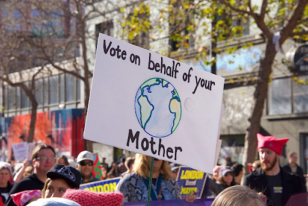

Life is busy and it’s hard to find time to join an active campaign or work with huge organizations to achieve global change.
So, what can we do at home to achieve local change? How much would our efforts make a difference? Why should we care?
We have all heard of ways to improve our carbon footprint: get an electric vehicle or solar panels for your house. Grow fruits and vegetables in a personal garden and make all your food at home instead of buying from stores. Frankly, these are expensive, time-consuming, and for some people, unrealistic.
How is someone who can’t afford a gas-fueled car supposed to afford an electric vehicle? How is someone living in an apartment in New York City supposed to get solar panels on their roof? How are they supposed to grow vegetables and raise livestock?
Well, sometimes small things can make a big difference! It may seem suspiciously easy, but something as simple as educating yourself, or doing community service, can help reduce your carbon footprint by a lot.
If you are the more ambitious type, you can go the extra mile and work with your local government to create change. Even something as simple as voting for a clean energy bill goes a long way!
picture from greengroundswell.com
Researching into your country’s environmental and industrial ambitions can go a long way as well. Informing yourself is the most impactful action you can take today. Learn about the politics of environmentalism so you can bring the environment into politics. Help make your community and local government aware of our home.
“Every election is determined by the people who show up.”
Larry J. Sabato
Your singular vote can make an impact on your community. It may not immediately change the world or even your country, but you can always help your town or city.
If your local authorities are not taking action, you can even contact your local representative and explain your concerns for our home and what you think we can do to help.
Trying to eat healthier is not only better for your body but better for the environment as well. Shopping local and organic is a big step in reducing our carbon emissions.
 Everyone knows about dieting. It is typical for adults trying to lose weight, gain muscle, or be more healthy in general to go on a Keto or Mediterranean diet. Well, fun fact, diets do not only affect your health, they also affect the environment. When you eat less meat or just more organically it helps prevent medical disasters such as heart disease, cancer, and high blood pressure; they also assist us in averting environmental disasters such as pollution, excessive littering, and landfill seepage.
Everyone knows about dieting. It is typical for adults trying to lose weight, gain muscle, or be more healthy in general to go on a Keto or Mediterranean diet. Well, fun fact, diets do not only affect your health, they also affect the environment. When you eat less meat or just more organically it helps prevent medical disasters such as heart disease, cancer, and high blood pressure; they also assist us in averting environmental disasters such as pollution, excessive littering, and landfill seepage.
Shopping at grocery stores not only helps support local farms and businesses but also helps limit waste. Organic foods can be turned into compost and put in gardens.
Dieting is not just for taking care of your health; it is also a way of giving back to your environment.

Picture from Daily News
 The bins are colored differently and named accordingly from right to left, Papier meaning paper, Kunststoff meaning plastic, Restmüll meaning residual waste or non-recyclable trash, Glas meaning glass, and Metall meaning metal. America is nowhere near this level of organization; however, we can all work individually and together to become more like Germany.
The bins are colored differently and named accordingly from right to left, Papier meaning paper, Kunststoff meaning plastic, Restmüll meaning residual waste or non-recyclable trash, Glas meaning glass, and Metall meaning metal. America is nowhere near this level of organization; however, we can all work individually and together to become more like Germany.
 These are only a few of the immense changes you can make in your daily life that, when added up, can help save the world that we have slowly been killing.
These are only a few of the immense changes you can make in your daily life that, when added up, can help save the world that we have slowly been killing.